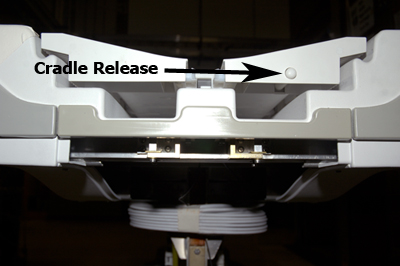

Illustration 2: Adjusting the Plunger

Illustration 2: Adjusting the Plunger
| NOTE: | The actuator must be positioned almost flush with the front surface of the cradle when the LPCA is attached to the cradle. If the actuator is positioned too far away from the cradle, it will not engage the Cradle Release button on the cradle. Likewise, if the actuator is positioned too far into the cradle, the entire Cradle Release rod mechanism will not release the cradle. Fine tune the actuator as necessary. |
Illustration 3: Cradle Release button
